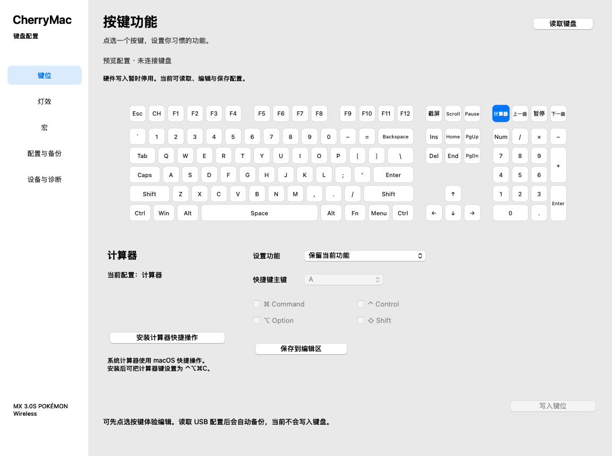

按键与快捷键
设置组合键、媒体键和禁用按键；提供独立的 Mac 端按键适配功能。
为 CHERRY MX 3.0S 宝可梦无线键盘提供 Mac 客户端与 PHP 网页版。点选按键，编辑快捷键、灯光和宏，保存或迁移配置。
当前支持 USB 按键写入、备份和读回核对。灯效与宏实体写入暂缓，完整 Windows 功能复刻仍在推进。

设置组合键、媒体键和禁用按键；提供独立的 Mac 端按键适配功能。
编辑内置灯效、逐键静态颜色和键盘宏，修改保留在编辑区。
导入配置、导出 JSON，并在读取设备配置后保留自动备份。
完整说明、兼容范围与最新状态见 项目 README。问题反馈请前往 GitHub Issues。